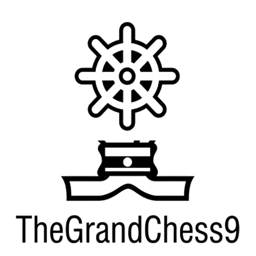

TheGrandChess9
Official Rules Book
Version 1.0
© 2025 Jitendra Kumar Surana
Table of Contents
1. Introduction
About TheGrandChess9
TheGrandChess9 is an innovative chess variant played on a 9×9 board, expanding the traditional 8×8 chessboard by one rank and file. This expansion introduces new strategic possibilities and unique pieces that transform the classic game of chess into an even more engaging experience.
Key Features
- 9×9 board (81 squares instead of 64)
- New pieces: Charioteer and Sceptre
- Pre-battle strategy: 2 pawn placement
- No castling allowed

TheGrandChess9 Board Overview
2. Board Setup
The 9×9 Board
TheGrandChess9 is played on a 9×9 board, with files labeled 'a' through 'i' and ranks numbered 1 through 9. The expanded board creates new strategic possibilities and changes the dynamics of the game.

9×9 Board with File and Rank Labels
Initial Piece Placement
The pieces are arranged similarly to traditional chess, with modifications to accommodate the larger board and new pieces.
White Pieces (Bottom)
- Airavat (Rook) at a1 and i1
- Charioteer at b1 and h1
- Knight at c1 and g1
- Sceptre at d1
- Commander (Queen) at e1
- King at f1
- Bishop at g1
- Pawns at rank 2
Black Pieces (Top)
- Airavat (Rook) at a9 and i9
- Charioteer at b9 and h9
- Knight at c9 and g9
- Sceptre at d9
- Commander (Queen) at e9
- King at f9
- Bishop at g9
- Pawns at rank 8

Initial Board Setup for TheGrandChess9
Special Rule - Pre-Battle Strategy: 2 Pawn Placement
Before the game begins, White may place two pawns anywhere on rank 3, and Black may place two pawns anywhere on rank 7. This strategic placement occurs after the initial setup but before the first move.

Pre-Battle Pawn Placement Example
3. Standard Pieces & Movement
King
The King moves one square in any direction (horizontally, vertically, or diagonally). The King cannot move into check. Note: Castling is not allowed in TheGrandChess9.

King Movement Pattern
Commander (Queen)
The Commander (Queen) moves any number of squares along a rank, file, or diagonal. It cannot jump over other pieces.
-movement.jpg)
Commander (Queen) Movement Pattern
Airavat (Rook)
The Airavat (Rook) moves any number of squares along a rank or file. It cannot jump over other pieces.
-movement.jpg)
Airavat (Rook) Movement Pattern
Bishop
The Bishop moves any number of squares diagonally. It cannot jump over other pieces.

Bishop Movement Pattern
Knight
The Knight moves in an L-shape: two squares in one direction (horizontal or vertical) and then one square perpendicular to that. The Knight can jump over other pieces.

Knight Movement Pattern
Pawn
Pawns move forward one square, with the option to move two squares on their first move. Pawns capture diagonally forward one square. En passant captures are possible under the same conditions as traditional chess.

Forward Movement

Capture Movement
4. New Pieces & Special Movements
Charioteer (Sarthi)
The Charioteer is a divine guardian who serves as both charioteer and protective shield for the King. The Charioteer has unique properties that make it unlike any other chess piece.
Special Property
The Charioteer neither attacks anyone nor can anyone attack it. It cannot capture or be captured. Its sole purpose is to protect the King.
Movement
The Charioteer moves like a King - one square in any direction. However, it cannot move into check or capture enemy pieces.
Protection Ability
When the Charioteer is adjacent to the King, it forms a protective shield. The King cannot be captured while a Charioteer is adjacent to it. To checkmate the King, the attacking player must first eliminate or move away all Charioteers.

Charioteer Movement and Protection Pattern
Sceptre
The Sceptre is the most powerful piece in TheGrandChess9, combining the movement capabilities of the Airavat (Rook), Bishop, and Knight. It represents the "Power of The Universe" and can dramatically change the course of the game.
Movement
The Sceptre can move as:
.jpg)
Airavat (Rook) Movement

Bishop Movement

Knight Movement
Important
The Sceptre is an extremely powerful piece that can checkmate the King on its own when properly positioned. Protecting your Sceptre and capturing your opponent's Sceptre are critical strategic objectives.
5. Special Rules
Pre-Battle Strategy: 2 Pawn Placement
Before the game begins, each player may place two of their pawns in special positions:
- White may place two pawns anywhere on rank 3
- Black may place two pawns anywhere on rank 7
- This placement occurs after the initial setup but before the first move
- These pawns can be placed on the same file or different files

Pre-Battle Pawn Placement Examples
Strategic Importance
This rule allows players to customize their opening strategy, control key squares, or prepare specific attacks or defenses before the game even begins.
No Castling Rule
Castling is not allowed in TheGrandChess9. Players must develop their King's safety through other means, such as:
- Strategic pawn placement for King protection
- Using Charioteers as defensive shields
- Maneuvering pieces to create a safe position for the King
- Controlling the center to limit opponent's attacking options
King Safety Note
Since castling is not available, players must pay extra attention to King safety from the beginning of the game. The pre-battle pawn placement becomes even more crucial for creating a safe environment for the King.
Pawn Promotion
When a pawn reaches the opposite end of the board (rank 9 for White, rank 1 for Black), it must be promoted to another piece. The player can choose to promote it to:
- Commander (Queen)
- Airavat (Rook)
- Bishop
- Knight
- Charioteer
- Sceptre (only if the player's original Sceptre has been captured)
Special Rule
A player can only have one Sceptre on the board at a time. A pawn can only be promoted to a Sceptre if the player's original Sceptre has been captured.
6. Game Conditions
Win Conditions
The game is won by:
- Checkmating the opponent's King (with all Charioteers eliminated or moved away)
- The opponent resigning
- The opponent running out of time (in timed games)
Charioteer Protection
If a King is in check but has an adjacent Charioteer, the King cannot be captured. The check must be resolved by moving the King, moving the Charioteer away, or blocking the check with another piece. Checkmate can only occur when the King has no adjacent Charioteers.
Draw Conditions
The game is drawn if:
- Both players agree to a draw
- 50 moves pass without a pawn move or capture
- The same position occurs three times with the same player to move
- Stalemate occurs (a player has no legal moves but is not in check)
- Insufficient material to checkmate (e.g., King vs. King, King and Charioteer vs. King)
Tie-Breaking in Tournaments
In tournament settings, the following methods may be used to break ties:
- Sudden death time control
- Armageddon chess (Black has draw odds)
- Piece value evaluation
| Piece | Point Value |
|---|---|
| Pawn | 1 |
| Knight | 3 |
| Bishop | 3 |
| Airavat (Rook) | 5 |
| Charioteer | 4 |
| Commander (Queen) | 9 |
| Sceptre | 12 |
7. Basic Strategies
Board Control
The 9×9 board offers additional space and new strategic possibilities. Controlling the center (e5 square) and the extended flanks can provide significant advantages.

Key Squares for Board Control
King Safety Without Castling
Since castling is not allowed, players must develop alternative strategies for King safety:
- Use pre-battle pawn placement to create a protective pawn shield
- Keep Charioteers near the King for protection
- Develop minor pieces quickly to control attacking squares
- Consider keeping the King in the center until the position clarifies

King Safety Strategies Without Castling
Charioteer Positioning
Proper positioning of Charioteers is crucial for King safety. Keeping at least one Charioteer adjacent to the King provides protection against sudden attacks and checkmate threats.

Effective Charioteer Positioning
Sceptre Utilization
The Sceptre is a powerful attacking piece that can control large areas of the board. Use it to create threats, control key squares, and support attacks on the enemy King.

Effective Sceptre Utilization
Pre-Battle Pawn Placement Strategy
The initial pawn placement can significantly influence the game's direction. Consider these strategic options:
- Center control: Place pawns on d3 and e3 to control the center
- Flank development: Place pawns on c3 and g3 to support piece development
- King safety: Place pawns on e3 and f3 to create a protective pawn shield
- Surprise attacks: Place pawns on a3 and i3 to prepare unexpected flank attacks

Pre-Battle Pawn Placement Strategies
8. Contact Information
Developer Information
TheGrandChess9 was developed by Jitendra Kumar Surana and Rishabh Jain as an innovative evolution of traditional chess.
Contact Details
- Email: amarjeetsurana@gmail.com
- Phone: +91-6260314913
- Location: Vidisha, Madhya Pradesh, India
- Website: https://thegrandchess9.com
Copyright
© 2025 Jitendra Kumar Surana. All Rights Reserved.
Unauthorized copying, distribution or commercial use without written permission is strictly prohibited and may lead to legal action.